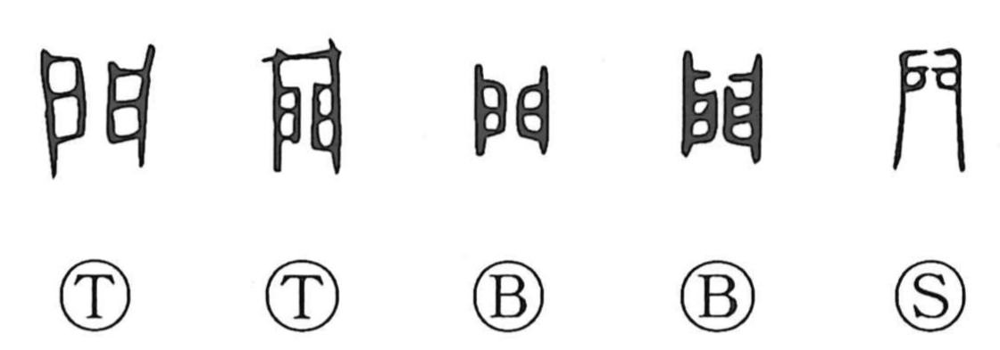

門

Kun: kado | On: mon
gate ・ entrance ・ household ・ family ・ clan
Explanation
門 pictures a pair of doors opening to either side. Each leaf has its own upright, producing the balanced double shape that remains visible in the modern character. The doors are pushed open to give access to the space within.
From a gate or entrance, 門 extends to the house reached through it and then to the family or lineage living there. A teacher’s entrance likewise stands for the people admitted to study: 門下 and 門生 name those belonging to that teacher’s circle. The same sense of belonging within a particular house develops into a school of practice or a specialized field.